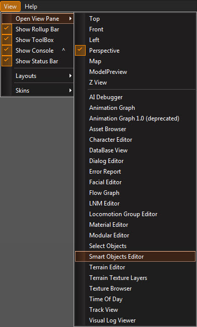
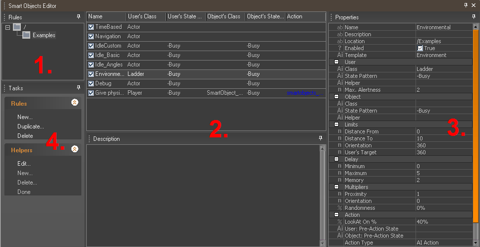
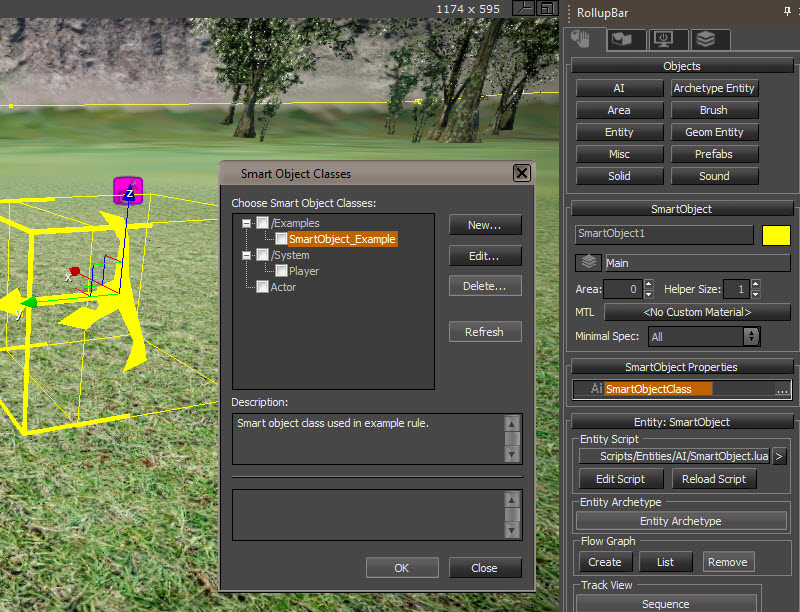
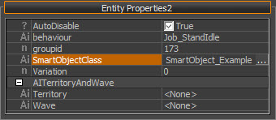
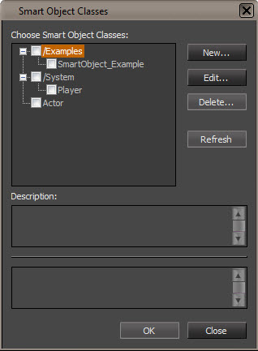
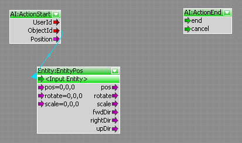
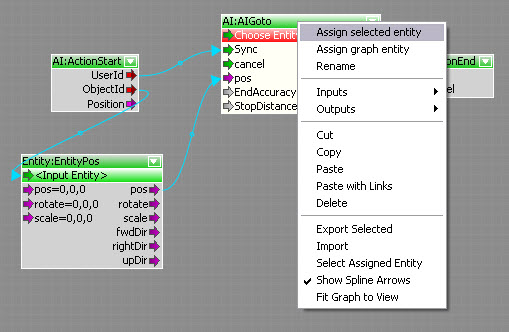
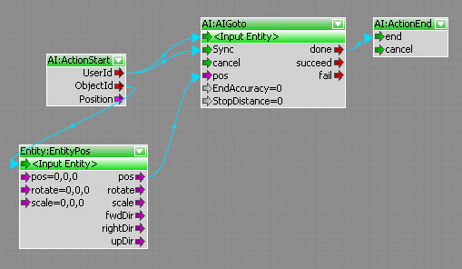
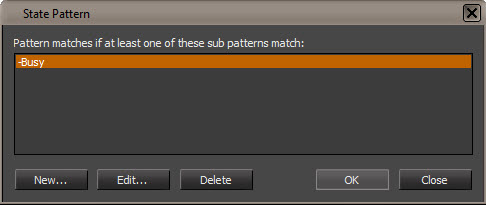

Обзор
Система SmartObject используется для создания общего поведения и поведения, специфичного для уровня. Термин SmartObject описывает объект, настроенный для взаимодействия с одним или несколькими другими объектами в игре.
Могут быть созданы специальные правила, определяющие, какой объект будет взаимодействовать с каким другим объектом. Эти правила основаны на классе и состоянии объекта и применяются ко всем объектам в игре совершенно независимо от модели объекта или уровня, на котором находится объект.
Систему SmartObject можно использовать для:
- Создание головоломок.
- Создание автоматических дверей, ловушек и других устройств.
- Создание фонового поведения для уровня, такого как перемещение предметов, машин и т. д.
- Управление поведением AI.
- Добавление «заскриптованных» AI моментов на уровень.
- Настройка специальных навигационных точек на уровне.
- Правила SmartObject не хранятся в .cry файл уровня, но в отдельном XML файл.
Редактор смарт-объектов
Редактор смарт-объектов интегрирован в Sandbox и может быть открыт из меню «Просмотр/Открыть панель просмотра». Это инструмент, который используется для создания и редактирования всех правил.

UI редактора разделен на четыре части:

1. Дерево правил
В этом окне представлен обзор всех существующих правил SmartObject. Отображение в стиле проводника помогает организовать наборы правил.
2. Подробности правил
Подробности правила SmartObject можно просмотреть в этом окне. В нижней части окна отображается описание выбранного правила, а в верхней части окна представлен обзор всех правил в выбранной в данный момент папке.
Правила можно перемещать между разными папками, перетаскивая их в нужное место. Серые правила в настоящее время деактивированы.
Правила можно сортировать, нажимая на кнопки вверху каждого столбца. Чтобы скрыть или добавить столбцы, щелкните правой кнопкой мыши по кнопкам и выберите нужный столбец.
3. Свойства правила
Окно «Свойства» содержит все настройки, которые можно задать для правила. Настройки, выполненные в этом окне, определяют, какое действие будет выполнено и является ли правило действительным или нет.
| Недвижимость | Описание | |
|---|---|---|
| Имя | Здесь можно ввести имя правила SmartObject. | |
| Описание | Здесь можно ввести описание правила SmartObject. Это описание будет показано в нижней части окна обзора правила. Убедитесь, что все создаваемые вами правила имеют подробное описание. | |
| Расположение | Местоположение — это имя папки, в которой помещено правило. Подпапки можно создавать с помощью '\'. Вход «Тест» например, поместит правило в папку с именем «Тест», введя 'Тест/MoreTest' поместит правило в папку «MoreTest» в папке «Test». Местоположение правила всегда можно изменить позже, если возникнет необходимость в реорганизации. Существует два способа переместить правило из одной папки в другую. Первый — это изменение строки местоположения, а второй — перетащить правило из окна сведений о правиле в нужную папку в окне обзора правила. | |
| Включено | Если этот флажок снят, соответствующее правило не будет применяться. По умолчанию новые правила не включены. | |
| Шаблон | Шаблон, используемый в этом правиле смарт-объекта. | |
| Правило навигации | Правило можно пометить как правило навигации, выбрав эту опцию. Правило навигации — это особый тип правила, который можно использовать для создания дверей и связей между модификаторами навигации. | |
| Событие | Событие, при котором сработает это правило. | |
| Пользователь | Настройки в этой категории определяют пользователя правила. | |
| Класс | SmartObject класс пользователя. Будут рассматриваться только пользователи этого класса. | |
| Образец состояния | Шаблон состояния, соответствующий классу пользователя. Будут рассматриваться только пользователи, состояние которых соответствует шаблону состояний. | |
| Помощник | Выбранный помощник будет использоваться вместо положения и ориентации пользовательского класса SmartObject. | |
| Макс. Бдительность | Может быть 0, 1 или 2. Установленная здесь бдительность определяет, насколько тревожным может быть пользователь. Например, если для оповещения установлено значение 0, правило не будет действительным, если пользователь находится в любом состоянии оповещения. | |
| Объект | Содержит все настройки, определяющие объект правила SmartObject. | |
| Класс | SmartObject класс объекта. Будут рассматриваться только объекты этого класса. | |
| Образец состояния | Шаблон состояния для сопоставления с классом объекта. Будут рассматриваться только объекты, состояние которых соответствует шаблону. | |
| Помощник | Выбранный помощник будет использоваться вместо положения и ориентации объекта класса SmartObject. | |
| Множитель стоимости | Расстояние между помощниками, умноженное на это значение, дает стоимость прохождения. | |
| Навигация | Если правило является правилом навигации, в этой категории можно определить соответствующие помощники. | |
| Вход | Здесь выбирается входной помощник навигационного правила. | |
| Выход | Здесь выбирается помощник выхода правила навигации. | |
| Пределы | Параметры этой категории определяют расстояние и ориентацию между пользователем и объектом правила. | |
| Расстояние от | Минимальное расстояние, которое должно быть между пользователем и объектом. | |
| Расстояние до | Пользователь и объект не должны находиться дальше друг от друга, чем расстояние, указанное здесь. | |
| Ориентация | Введенный здесь угол описывает ориентацию пользователя на объект. Угол 360 означает, что правило всегда будет действовать, независимо от того, смотрит пользователь на объект или нет. | |
| Цель пользователя | Предел ориентации объекта относительно цели внимания пользователя. | |
| Задержка | Настройки, сделанные в этой категории, определяют, сколько long потребуется для запуска действия. | |
| Минимум | Минимальное количество времени, которое потребуется для выполнения действия. | |
| Максимум | Максимальное количество времени, которое потребуется для выполнения действия. | |
| Память | Это значение сообщает пользователю, как long запомнить соединение с объектом. | |
| Случайность | Это значение определяет, сколько случайности будет добавлено между минимальной и максимальной задержкой. | |
| Множители | Дополнительные настройки в этой категории используются для дальнейшего определения правил и подчеркивания определенных аспектов. | |
| Близость | Это значение задает важность близости объекта для пользователя. Это значение может использоваться для самых удаленных объектов, которые будут использоваться пользователем первыми. | |
| Ориентация | Это значение задает важность ориентации пользователя на объект. | |
| Видимость | Это значение определяет, насколько важна видимость между пользователем и объектом. | |
| Случайность | Это значение определяет, сколько случайности будет добавлено между значениями. | |
| Действие | В этой категории можно выбрать не только само действие, но и состояния до и после действия. Состояния предварительного действия устанавливаются до запуска действия и предотвращают его повторный запуск. Состояния действия после завершения устанавливаются автоматически после его завершения. Хотя это и возможно, нет необходимости устанавливать состояние пост-действия вручную внутри самого действия. | |
| LookAt Вкл. | Введенное здесь значение описывает, когда пользователь повернется, чтобы посмотреть на объект, относительно общей продолжительности до выполнения действия. Значение вводится в процентах. Это означает, что значение 50% заставит пользователя смотреть на объект через 2 секунды в течение 4 секунд. Такое поведение LookAt применяется только в том случае, если пользователь является персонажем. Например, если пользователь представляет собой коробку, он не будет поворачиваться в направлении объекта. | |
| Пользователь: состояние до действия | Перед началом действия пользователю будет присвоен выбранный здесь шаблон состояния. | |
| Объект: Состояние до действия | Перед началом действия объекту будет присвоен выбранный здесь шаблон состояния. | |
| Тип действия | Здесь можно выбрать тип действия, которое необходимо выполнить. | |
| Название действия | Здесь можно выбрать действие, которое необходимо выполнить. При нажатии на поле редактирования открывается окно выбора действия. Если нужного действия не существует, его можно создать в этом окне. | |
| Ранняя регенерация пути | Определяет, когда путь будет регенерирован: в начале анимации (истина) или после окончания (ложь). | |
| Пользователь: Состояние после действия | Выбранный здесь шаблон состояния будет применен к пользователю после завершения действия. | |
| Объект: Состояние после действия | Выбранный здесь шаблон состояния будет применен к объекту после завершения действия. | |
| Точное позиционирование | Заставляет агент AI переместиться в точную начальную позицию смарт-объекта перед выполнением действия, поэтому анимация идеально соответствует форме смарт-объекта. | |
| Скорость | Скорость движения при приближении к вспомогательной точке. | |
| позиция | Положение тела при приближении к точке помощника. | |
| Помощник по анимации | Вспомогательная точка объекта, в которой будет воспроизводиться анимация. По умолчанию используется вспомогательная точка входа. | |
| Подход Помощник | Вспомогательная точка объекта, к которой нужно приблизиться перед воспроизведением анимации. Если пусто, используется помощник анимации. | |
| Начальный радиус | Расстояние от начальной точки смарт-объекта, необходимое для запуска анимации. | |
| Допуск направления | Максимальная разница между ориентацией AI и начальной точки смарт-объекта — если AI не ориентирован таким образом, перед запуском он поворачивается. | |
| Целевой радиус | Целевой радиус (допуск) для воспроизведения анимации. |
4. Задачи
Окно «Задачи» содержит все элементы управления для создания, редактирования и удаления новых правил и помощников.
Правила
Правило SmartObject описывает связь между двумя классами SmartObject. Всякий раз, когда условия правила совпадают, выполняется определенное действие AIAction.
Правило SmartObject состоит из:
- Класс «Пользователь» и «Объект» SmartObject.
- Шаблон состояния для классов «Пользователь» и «Объект», который должен совпадать.
- Различные дополнительные параметры для дальнейшего определения правила (расстояние, ориентация и т. д.).
- AIAction, который будет выполнен, если все условия соблюдены.
Помощники
Помощники SmartObject хранят смещения позиции в классе SmartObject. Доступ к этим помощникам можно получить из графа действий с помощью узла «SmartObjectHelper», который выводит всю необходимую информацию. Доступ к нему также возможен, например, из группы параметров точного позиционирования. Помощник по анимации и подходу.
Помощник всегда привязан к классу SmartObject и никак не связан с моделью сущности. Каждое AIAction может автоматически получать доступ ко всем помощникам, независимо от того, к какому классу они привязаны.
Вспомогательный редактор смарт-объектов UI
Помощники смарт-объектов — это ориентированные точки, прикрепленные к смарт-объектам. Они используются для определения некоторых конкретных точек или направлений относительно текущего положения и ориентации смарт-объекта. Их положение и ориентацию можно получить с помощью узла потокового графа. В некоторых конкретных случаях их положение и ориентация также будут использоваться внутри подсистемы смарт-объектов, и на данный момент это происходит только в том случае, когда смарт-объекты используются для навигации. Каждый класс смарт-объектов имеет свой собственный набор помощников. Все помощники имеют уникальные имена в классе смарт-объектов. Ко всем смарт-объектам определенного класса смарт-объектов прикреплена собственная копия помощников.
Помощники определяются с помощью окна редактора смарт-объектов. Его панель задач содержит группу «Помощники», где изначально доступна только команда «Редактировать». Поскольку определения помощников принадлежат классам смарт-объектов, нажатие команды «Редактировать» вызывает диалоговое окно со списком всех известных классов смарт-объектов. При выборе одного из них активируется режим вспомогательного редактора. Команда «Редактировать» изменит свой заголовок на «Редактирование», показывая выбранный класс смарт-объекта. Для редактирования будут доступны только помощники, принадлежащие выбранному классу смарт-объектов.
В режиме вспомогательного редактора доступны следующие операции:
- Команда Создать в группе Помощники позволяет создавать новых помощников.
- При выборе любого объекта, принадлежащего к классу смарт-объектов, выбранному для редактирования, все помощники отображаются в виде небольших каркасных прямоугольников, соединенных с выбранным объектом линиями.
- Поля, отображаемые для обозначения помощников, можно выбрать в Редакторе или из списка по имени помощника с помощью команды Редактирование.
- Выбранных помощников можно перемещать и вращать в редакторе.
- Выбранный помощник можно удалить с помощью команды Удалить команды группы Помощники.
- Команда Done завершает режим вспомогательного редактора.
Примечание. Определения помощников смарт-объектов хранятся в файле: Game/Libs/SmartObjects.xml
Adding_Helpers_to_a_SmartObject

Чтобы добавить нового помощника в SmartObject:
- Выберите объект и назначьте правильный SmartObjectClass.
- Нажмите Редактировать в окне редактора смарт-объектов. Появится диалоговое окно. Если класс SO не выбран, это означает, что объект еще не зарегистрирован как смарт-объект, поэтому запустите AI/Physics и выйдите из него, чтобы обновить систему. Снимите выделение, выберите объект еще раз и повторите этот шаг.
- Выберите класс смарт-объекта, для которого вы хотите редактировать помощники (если какой-либо другой уже выбран), и нажмите OK.
- Нажмите кнопку Новый кнопку в разделе «Помощники». Появится новое диалоговое окно.
- Введите имя помощника, которого вы хотите создать, и нажмите OK. Помощник будет создан и (если объект все еще выбран) появится в главном окне редактора в виде небольшого желтого прямоугольника. Он уже выбран. Когда указатель мыши наводится на поле, рядом с ним отображается его имя.
- Используйте инструменты «Перемещение» и «Поворот», чтобы отрегулировать его положение и ориентацию. Обратите внимание: если выделение будет снято или выбран другой объект, помощник исчезнет. Выберите объект еще раз, и помощник появится снова. Выберите помощника.
- Наконец, нажмите Готово в разделе «Помощники» для выхода из режима «редактирования помощников».
Доступ к данным смарт-объекта вне редактора смарт-объектов
SmartObject Классы
Почти все сущности в игре могут иметь класс смарт-объектов. Установка класса смарт-объектов для сущности ничего не меняет в самой сущности, это всего лишь дополнительная информация для системы смарт-объектов.
Можно ли назначить объекту класс смарт-объектов или нет, можно увидеть в окне свойств объекта.

Свойство класса SmartObject
Класс SmartObject сущности можно установить, щелкнув поле редактирования свойства '!SmartObjectClass'. Сущность может иметь любое количество классов SmartObject.
Если у сущности есть более одного класса SmartObject, каждое правило, назначенное этому классу, будет применено к этой сущности.

SmartObject окно выбора класса
AIДействия
AIAction — это особый тип Flow-Graph, который выполняется по правилу SmartObject, если его условие соответствует. IActions также можно выполнять из любого Flow-Graph с использованием узла AIExcute, но обычно они вызываются по правилу SmartObject.
Основное различие между обычным Flow-Graph и AIAction заключается в том, что AIAction может использовать только пользователя и объект правила SmartObject в качестве целевых объектов внутри графа.
ActionStart/ActionEnd
Всякий раз, когда создается новый AIAction, к графику автоматически добавляются два узла:
ActionStart и !ActionEnd. Эти узлы используются для запуска и завершения AIAction.

График AIAction по умолчанию
Единственные сущности, которые можно использовать, — это пользователь и объектная сущность правила SmartObject. Хотя в граф действий можно добавить любую другую сущность, допустимы только сущности пользователя и объекта ID.
Всякий раз, когда запускается AIAction, узел ActionStart выводит ID пользователя и объекта на соответствующие порты. Этот импульс можно использовать для запуска всех необходимых узлов, как в обычном графе.
Идентификаторы пользователей и объектов
Существует два способа выбора целевого объекта для узла в графе действий: подключение выходных портов ActionStart к соответствующему входному порту ID или выбор целевого объекта из контекстного меню объекта.

Использование контекстного меню для выбора целевой сущности.

Назначение целевой сущности извне.
Организация AIactions
Как и обычные Flow-Graph, AIActions можно распределить по разным папкам.
Чтобы поместить AIAction в папку, откройте контекстное меню действия в окне «Потоковые графики» и выберите параметр «Изменить папку». Новая папка будет создана при вводе нового имени папки.
Штаты
Как для пользователя, так и для объекта правила SmartObject можно выбрать шаблон состояния. Если этот шаблон соответствует, выполняется соответствующее AIAction правила.
Класс SmartObject не может иметь только одно состояние. Вы можете создать столько состояний для класса, сколько захотите.
Шаблон состояний состоит из набора подшаблонов, каждый из которых содержит два набора состояний: набор «Включить» и «Исключить». Набор «Включить» определяет, какие состояния должны быть установлены.
Если набор «Включить» содержит три разных состояния, все эти состояния должны быть установлены, чтобы сопоставление с образцом было успешным. Все состояния, добавленные в набор «Исключить», не должны быть настроены на положительное совпадение с шаблоном.

Шаблон состояния состоит из наборов «Включить» и «Исключить».
Изменение состояний
Чтобы изменить состояние, необходимо установить шаблон состояния для класса SmartObject. Все состояния из набора «Включить» этого шаблона будут добавлены в класс, а все состояния из набора «Исключить» будут удалены. Например, этот шаблон удалит состояния «Наблюдение» и «PrepareCombat» из соответствующего объекта и добавит состояния «Предупреждено» и «Бой».
Пример шаблона
Состояния объекта можно изменить разными способами:
Использование настроек до и после действия
Настройки действий до и после в свойствах правила можно использовать для установки состояний. Это самый быстрый способ установки состояний.
Использование узла AIModifyStates
Узел AIModifyStates можно использовать в графах действий или обычных графах для изменения состояний объекта.
Установка состояния в скриптах
Вы также можете в любое время изменить состояния SmartObject с помощью сценария LUA. Вам необходимо предоставить объект ID и строку шаблона состояния в качестве параметров.
Просто позвоните:
AI.ModifySmartObjectStates( _EntityID_ , _StatePattern_ )Пример:
!AI.ModifySmartObjectStates( entity.id, "-Idle" );